The Garage at Northwestern
Content, storytelling, and startup strategy at Northwestern’s hub for innovation.
Time Frame
Sep 2024 – Present
Location
Evanston, IL
Role
Marketing Aide
Team
The Garage Marketing Team
Tools
Overview
As a Marketing Aide at The Garage — Northwestern’s premier startup incubator — I help bring our programming and resident ventures to life through digital content and event storytelling.
How can storytelling empower early-stage founders and foster a thriving entrepreneurial community on campus?
I write and format feature stories on student ventures, manage event coverage, and support up to 38 teams in The Garage Residency Program. I also help plan weekly Founder’s Friday gatherings and panels — capturing them with professional photography and distributing content across platforms.
My Contributions
- Managed marketing campaigns and content for events & startups
- Wrote & edited articles highlighting resident ventures and guests
- Planned events, took professional photos, and promoted across platforms
- Provided 1:1 guidance to student ventures on branding & marketing
Highlights
 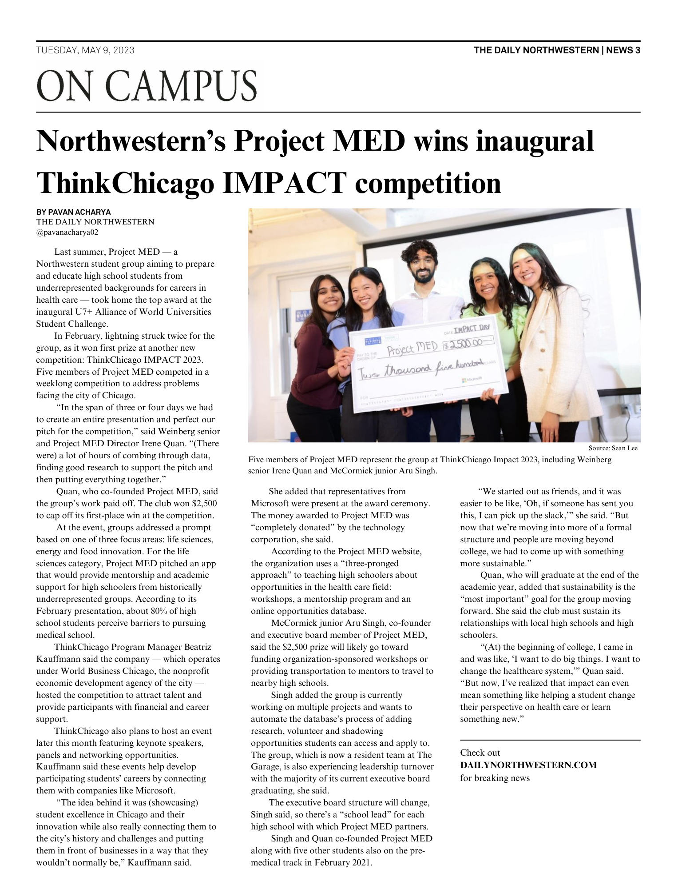
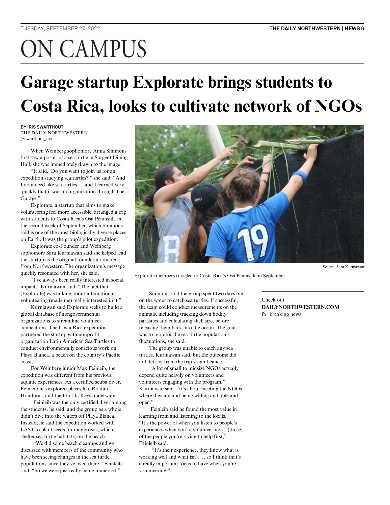
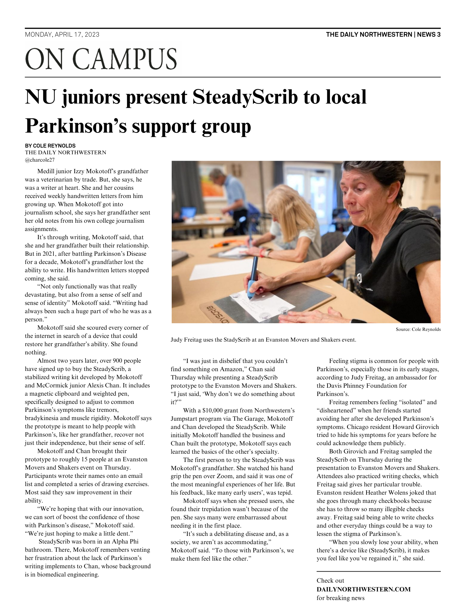
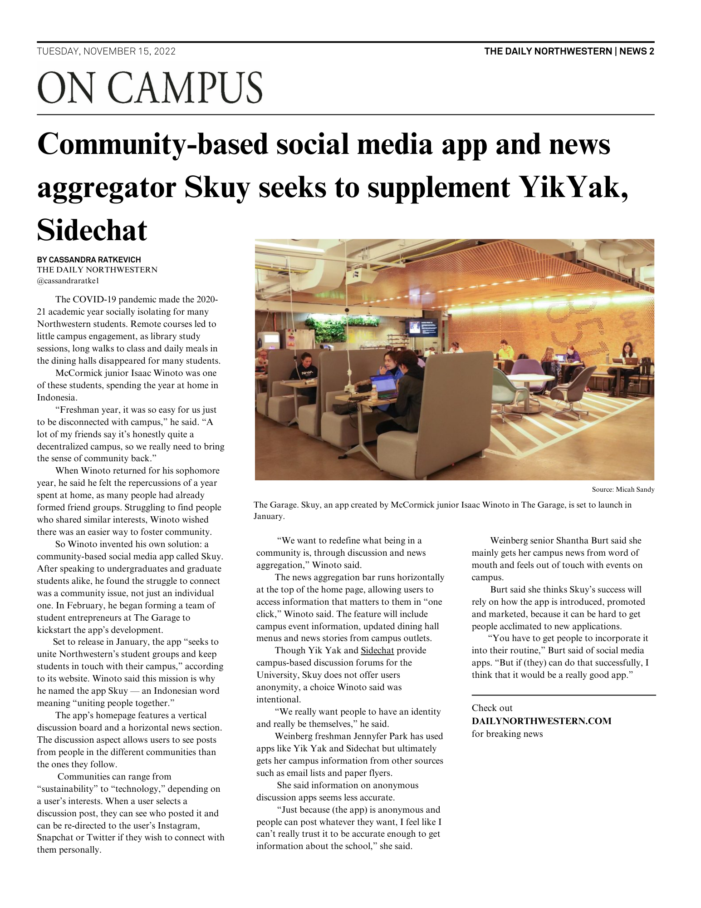
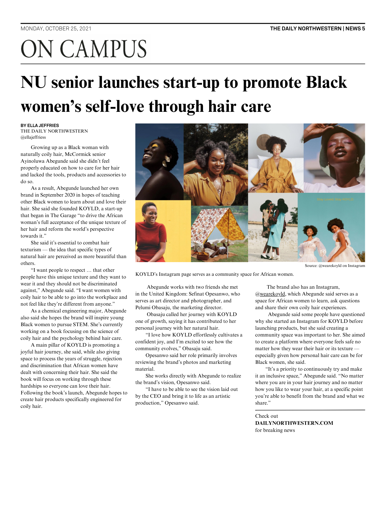
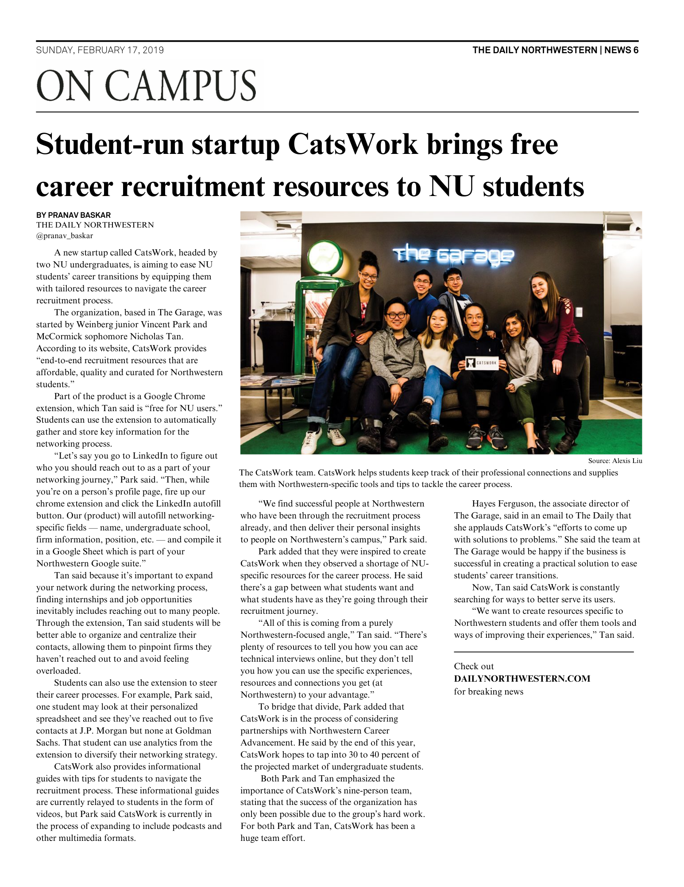
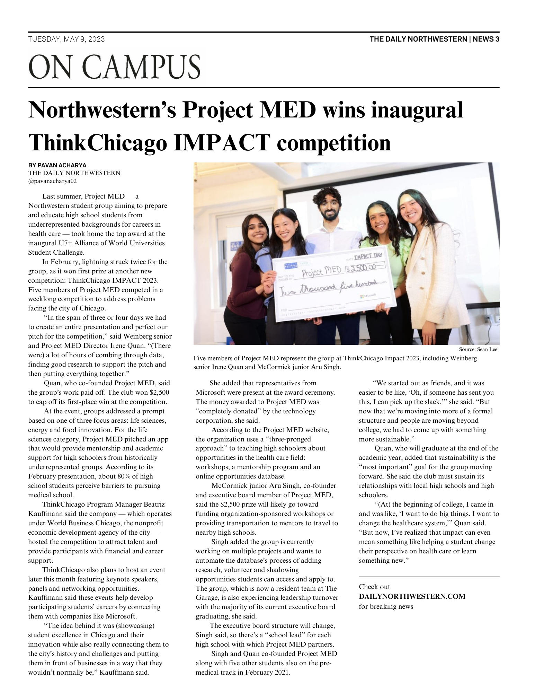
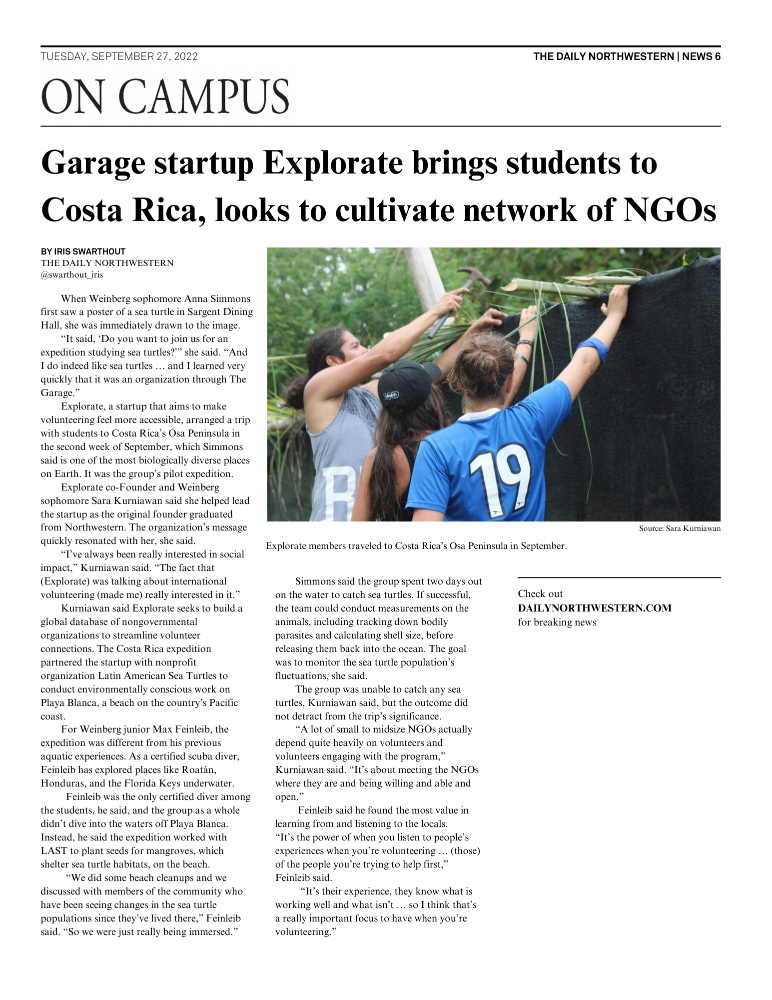
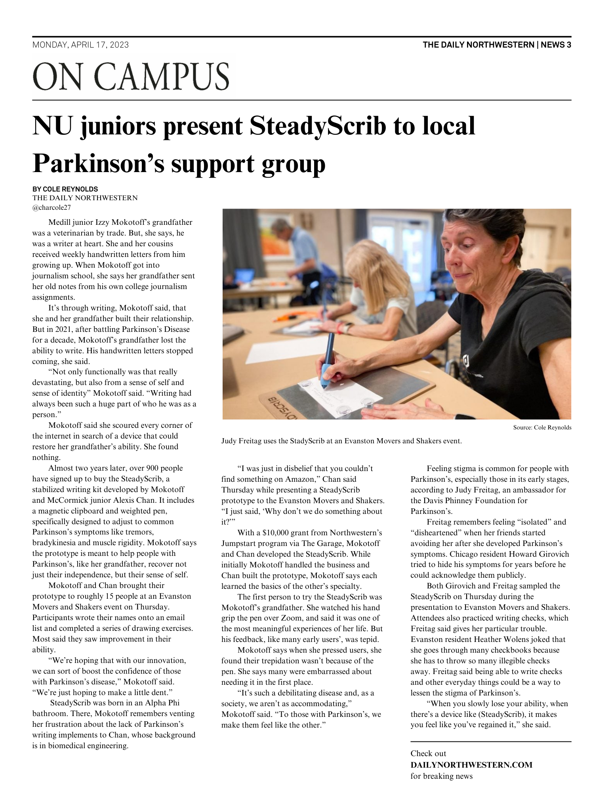
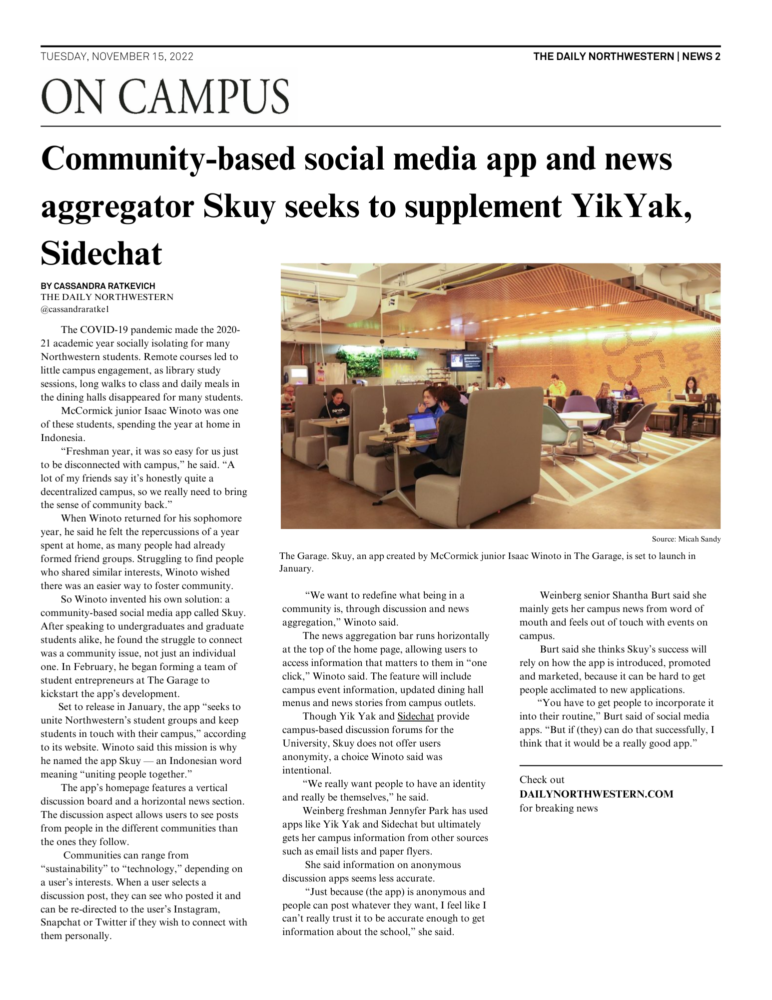
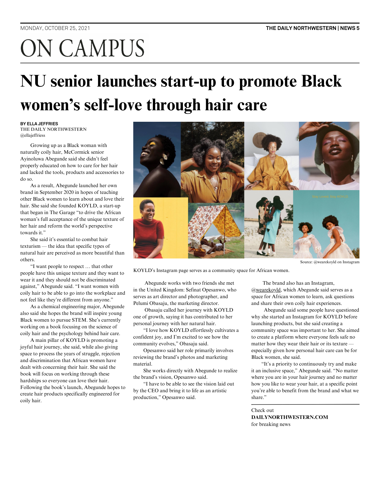
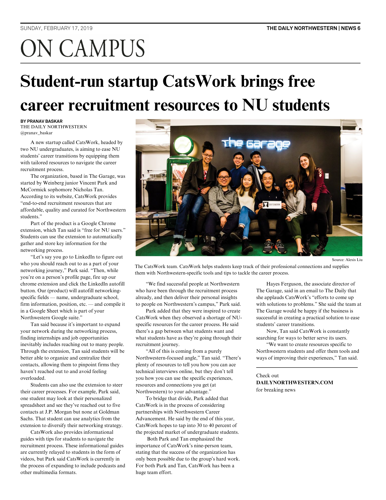
Reflections
This role has taught me how to merge community-building with digital content. By spotlighting student founders, planning meaningful events, and experimenting with format and style, I’ve helped shape how The Garage connects with its community.